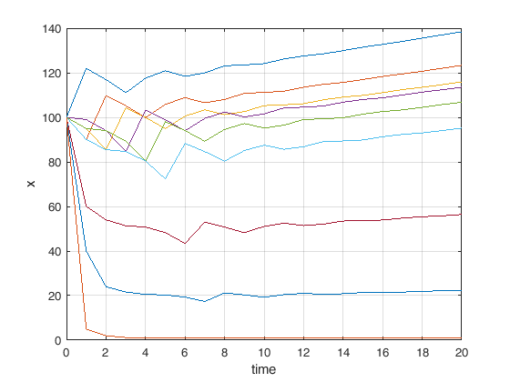
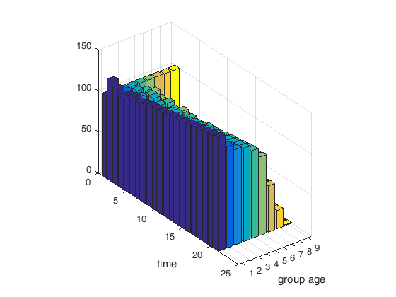

Matlab script example - Population model
This is an example of a Matlab script to simulate the evolution of a population. Each state corresponds to the number of individuals in a certain age group.
Revisions: N/A
% Clear workspace and close all figures; clear; close all; % Set population dynamic parameters A = [0 0.10 0.60 0.40 0.10 0.02 0.00 0.00 0.00 diag([0.9 0.95 0.99 0.95 0.9 0.6 0.4 0.05]), zeros(8, 1)] % Initial population x0 = 100 * ones(9, 1); %9 linhas, 1 coluna, de 1's % Compute time vector time = (0:1:20); % vector entre 0 e 20 em intervalos de 1 % Reserve space for the solution vector (it is better to allocate this % in advance than to augment the size of the solution vector online, inside % a cycle). x = zeros(length(time), 9); %9 colunas e o numero de linahs é do tamnho de numero de unidades de tempo x(1, :) = x0; %x(linha 1, todas as colunas) % Solution of the discrete-time linear time invariant system for counter = 1:length(x)-1 x(counter + 1, :) = (A*x(counter, :)')'; % Os (:) quer dizer que são as colunas todas daquela linha end % Plot results figure(1); plot(time, x); xlabel('time'); ylabel('x'); grid on; figure(2); bar3(x); %cria um grafico tridimensional xlabel('group age'); ylabel('time'); alfa=[0.5:0.05:2]; delta=[-2:0.05:-0.5];
A =
Columns 1 through 7
0 0.1000 0.6000 0.4000 0.1000 0.0200 0
0.9000 0 0 0 0 0 0
0 0.9500 0 0 0 0 0
0 0 0.9900 0 0 0 0
0 0 0 0.9500 0 0 0
0 0 0 0 0.9000 0 0
0 0 0 0 0 0.6000 0
0 0 0 0 0 0 0.4000
0 0 0 0 0 0 0
Columns 8 through 9
0 0
0 0
0 0
0 0
0 0
0 0
0 0
0 0
0.0500 0
  Quiz: Try with different coefficients on the first row of A. What happens if you decrease them too much? Does it make sense?